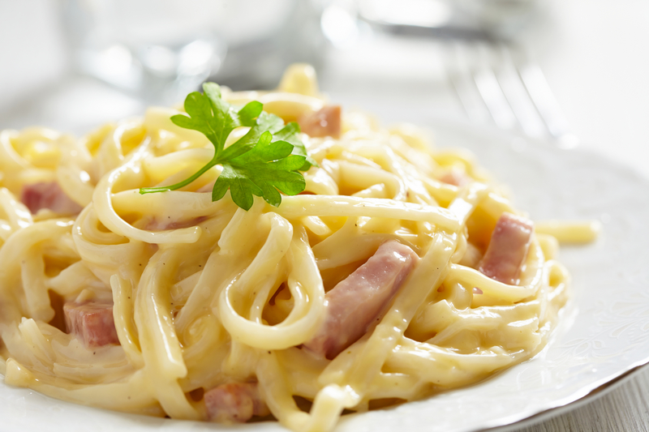

Lasagna

Description
Pasta Carbonara is a classic Italian dish made with spaghetti tossed in a rich, creamy sauce made from eggs, Parmesan cheese, pancetta or guanciale, and black pepper. The heat from the pasta cooks the eggs, creating a silky coating without the use of cream. It's a simple yet flavorful dish, known for its indulgent texture and savory taste.
Ingredients
- Spathetti
- Pancetta
- Eggs
- Parmesan cheese
- Garlic
- Salt and pepper
Steps
- Boil a large pot of salted water and cook the spaghetti according to package instructions until al dente. Reserve 1 cup of pasta water, then drain the pasta.
- In a large skillet, cook the pancetta or guanciale over medium heat until crispy. If using garlic, add it to the skillet and sauté for 1-2 minutes until fragrant.
- In a bowl, whisk together the egg yolks and grated Parmesan cheese until well combined.
- Quickly add the hot drained pasta to the skillet with the pancetta, tossing to combine. Remove from heat.
- Pour the egg and cheese mixture over the pasta, stirring quickly to create a creamy sauce. Add reserved pasta water as needed to reach desired consistency.
- Season with freshly ground black pepper and additional salt if needed.
- Serve immediately, garnished with extra Parmesan cheese and black pepper. Enjoy!